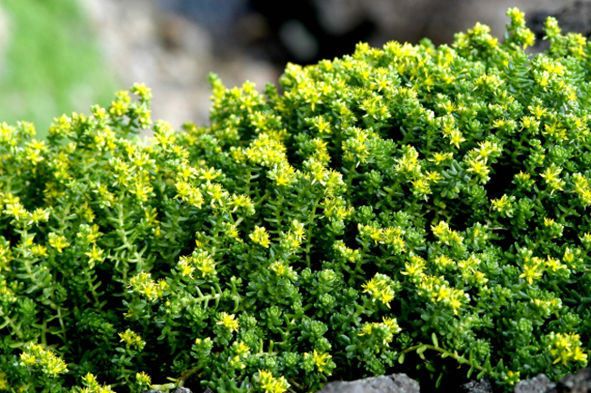
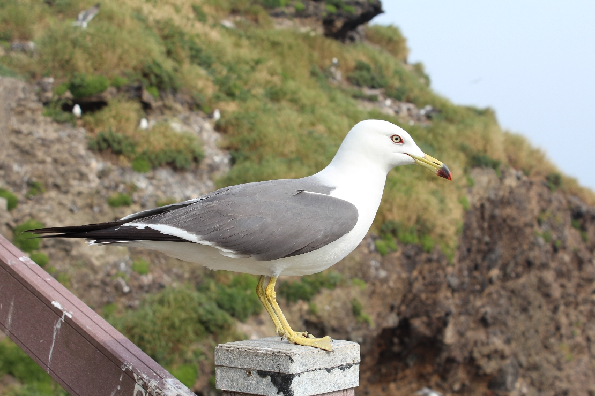
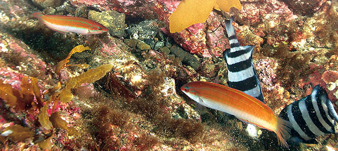

독도는 약 460만 년 전에서 해저에서 분출한 용암이 굳어진 후 270만 년 전에 바다 위로 드러났다. 원래 하나의 섬이었지만, 침식 작용으로 약 250만 년 전에 두 개의 섬으로 분리되었고, 210만 년 전에 오늘날과 같은 모습을 갖추게 되었다.
실제 독도 해저 지형을 보면 울릉도와 독도는 해수면 아래에서 서로 연결되어 있다. 울릉도와 독도 사이에는 수심 2,000m가 넘는 넓은 평원이 있고, 그 사이에 거대한 산맥들이 연결되어 있어 해저산의 진화 과정을 한눈에 알아볼 수 있는 세계적인 지질 유적지이다.
독도는 화산암체로 이루어져 있어 식물이 잘 자랄 수 있는 좋은 환경은 아니다. 또한 섬의 경사가 심하여 비가 내려도 빗물이 섬의 비탈을 따라 흘러 버리기 때문에 토양이 건조한 편이다. 그래서 독도에는 해국, 땅채송화, 민들레 등 열악한 환경에 잘 견디는 식물이 자생하고 있다.
독도는 이동 중인 조류들의 피난처로 철새들이 많이 모여든다. 관찰된 조류는 160여 종으로 대표적으로 괭이갈매기, 슴새, 바다제비 등이 있다.
또한 난류와 한류가 교차하고 있어, 다양한 어종이 모여드는 황금어장이다. 더욱이 바위마다 미역, 다시마, 파래 등의 해조류가 서식하고 있기도 하다.
